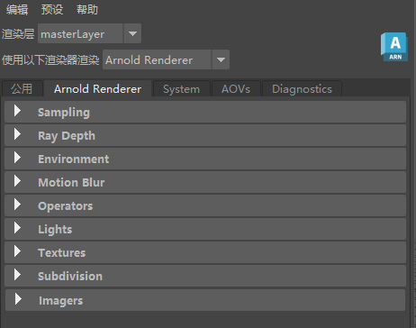
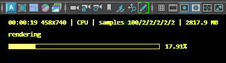

29 March 2023
MtoA 5.3.0 introduces Arnold 7.2.0.0 and is a major feature release bringing improvements to volume shading and viewport rendering, support for Apple Silicon, and a more flexible physical sky that allows for separate sky and sun lights.
MtoA 5.3.0 works with the following Maya plugins:
|  |
physical_sky to allow you to disable the sky contribution, allowing for separate lights for sun and sky. (MTOA-1266)aiVolumeShader have been updated and added for the new bifrost aero shading. (MTOA-1254)|  |
Support MikkT normals in Maya 2024 : MtoA in Maya 2024 supports the new MikkT tangents that can be exported. (MTOA-1183)
TX Manager displays nodes in texture list : the TX Manager can now display the scene nodes that use a texture and the colorspace they are set to. (MTOA-1283)
Display current render state in Arnold Render View status bar. The Render view now displays the current status of the render process in the bottom status bar. (ARNOLD-12291)
Colorspace included in TX filename: AutoTX-generated files now include the original extension and the texture and rendering color spaces in the filename. For example, running AutoTX on my_texture.jpg with an sRGB color space and ACEScg rendering color space would produce: my_texture_sRGB_ACEScg.jpg.tx. Textures that are not supposed to have colorspace changes get the tag raw, such as my_texture_raw.jpg.tx. (ARNOLD-11919)
Faster node init/update: The node init and update time is now faster. We have seen speedups of up to 20%. (ARNOLD-12870)
Improved many-core volume scaling: Rendering performance of volumes has been improved on certain many-core machines. The Disney cloud on a dual Intel Xeon Linux machine (56 total logical cores) now renders 1.4x faster. (ARNOLD-13004)
Support up to 1024 CPU cores: AI_MAX_THREADS has been increased from 256 to 1024, which allows Arnold to now create up to 1024 threads for full CPU utilization on machines with up to 1024 cores. (ARNOLD-11015, ARNOLD-12967, ARNOLD-12997)
Instancer light linking: If a light is linked to a shape and both are instanced, then the instancer now preserves this link within instances. This means the first light instance is linked to the first shape instance, the second light instance to the second shape instance, and so on. (ARNOLD-12929)
polymesh.smoothing defaults to true: The default setting for polymesh.smoothing (smoothed normals) is now true across the core and plugins. Previously it was disabled in the core and only some plugins. (ARNOLD-11688)
Remove warning about using tiled with deep_exr: We no longer warn about using tiled with deep_exr. (ARNOLD-12887)
Improved many-core OCIO performance: Rendering performance when using OCIO has been improved (for example when using 8-bit textures, textures in a different colorspace to the rendering colorspace and not using AutoTX, or shading operations that require colorspace transforms). This can result in an up to 20% reduction in rendering time especially when using multi-socket systems. (ARNOLD-12912)
Better autobump visibility masking: We can now also disable autobump on camera and shadow rays. These used to be treated as always enabled. For scenes with non-opaque objects, disabling autobump on shadow rays can give up to a 50% speed up, usually without changing the look. (ARNOLD-8863)
MaterialX displacement shaders: MaterialX displacement shaders are now interpreted correctly. usd#1366
Arnold shader metadata: We now register all Arnold shader metadata in the Sdr registry. Before only the Help and Role metadata were passed to the registry. usd#1390
AutoTX environment variable: HDARNOLD_auto_generate_tx can be set to override the default AutoTX behaviour in the render delegate. usd#1353
Driver options in the RenderProduct primitive: It is now possible to set the driver options in the RenderProduct primitive using attribute names prefixed with the driver name in the Arnold namespace. For example arnold:driver_jpeg:quality will set the quality when rendering with the jpeg driver. usd#1346
Load/Read, Write, and Resize image API changes: The Image API functions introduced in 7.1.4 now also take an optional AtParamValueMap so that in the future we can add or change parameters to these functions without breaking the API. Currently there are no parameters these functions expect.
Additionally, AiLoadImage() has been deprecated and replaced with the more appropriately named AiReadImage(); functionally they do the same thing. (ARNOLD-12937)
bool AiReadImage(const char* filename, const uint8_t format, AtImage& image, AtParamValueMap* params = nullptr);
bool AiWriteImage(const char* filename, const AtImage& image, AtParamValueMap* params = nullptr);
bool AiResizeImage(const AtImage& inImage, AtImage& outImage, AtParamValueMap* params = nullptr);Specify connected inputs in AiMaterialxGetOslShaderCode: The new optional connected_input parameter enables client code to specify input connection on a MaterialX node reference. This is needed for Geometry Property input connections like UV coordinates, to prevent them from being removed from the generated OSL code. (ARNOLD-12712)
New API to get the name of the TX file generated for a given texture: TX file names now include the color spaces and the extension of the original file, so we added AiTextureGetTxFileName to allow client code to get the exact name of the generated TX file. (ARNOLD-12970)
AtString AiTextureGetTxFileName(const char* filename, AtString texture_color_space, AtString render_color_space, const AtUniverse* universe);Enable/disable crash handler for the session: The new function AiSetSystemHandlers() and the environment variable ARNOLD_SYSTEM_HANDLER_MASK allow users to mask the Arnold built-in system handlers. The supported masks are listed in AtSystemHandlerMask and allow all handlers to be enabled or disabled. (ARNOLD-13014)
Arnold 7.2.0.0 breaks binary compatibility: Shaders, procedurals, and other plugins compiled against older versions of Arnold are not compatible with this version of Arnold and need to be updated and recompiled.
Autodesk Network Licensing version : Arnold 7.2 switches to ARNOL_2024 licensing. (ARNOLD-12833)
ARNOL_2024 licenses.AiLoadImage: AiLoadImage() has been deprecated and replaced with the more appropriately named AiReadImage(); functionally they do the same thing. (ARNOLD-12937)
inline AI_DEPRECATED bool AiLoadImage(const char* filename, const uint8_t format, AtImage& image)
{
return AiReadImage(filename, format, image, nullptr);
}Removed deprecated functions: The following previously deprecated functions have now been removed. (ARNOLD-12938)
// replace with init() as there is no benefit to specifying an init bound
void AtBBox::init(float bound);
// replace with AtMutex
void AiCritSecInit(AtCritSec* cs);
void AiCritSecInitRecursive(AtCritSec* cs);
void AiCritSecClose(AtCritSec* cs);
void AiCritSecEnter(AtCritSec* cs);
void AiCritSecLeave(AtCritSec* cs);
// Replace with variants that specify the universe or render session
int AiDeviceSelect(AtDeviceType device_type, const AtArray* device_ids);
int AiDeviceAutoSelect();
AtDeviceType AiDeviceGetSelectedType();
const AtArray* AiDeviceGetSelectedIds(AtDeviceType device_type);
int AiASSWrite(const char* filename, int mask = AI_NODE_ALL, bool open_procs = false, bool binary = true);
int AiASSWriteWithMetadata(const char* filename, int mask = AI_NODE_ALL, bool open_procs = false, bool binary = true, const AtMetadataStore* mds = NULL);
int AiASSLoad(const char* filename, int mask = AI_NODE_ALL);
void AiMsgSetLogFileFlags(int flags);
void AiMsgSetConsoleFlags(int flags);
int AiMsgGetLogFileFlags();
int AiMsgGetConsoleFlags();
AtNode* AiNode (const AtString nentry_name, const AtString name = AtString(), const AtNode* parent = NULL);
AtNode* AiNodeLookUpByName (const AtString name, const AtNode* parent = NULL);
AtNode* AiNode (const char* nentry_name, const char* name = "", const AtNode* parent = NULL);
AtNode* AiNodeLookUpByName (const char* name, const AtNode* parent = NULL);
bool AiOpSetTarget(AtNode* node);
AtNode* AiOpGetTarget();
AtSessionMode AiGetSessionMode();
void AiRenderAddInteractiveOutput(uint32_t output_index);
bool AiRenderIsInteractiveOutput(uint32_t output_index);
bool AiRenderRemoveInteractiveOutput(uint32_t output_index);
void AiRenderRemoveAllInteractiveOutputs();
void AiRenderSetInteractiveOutput(uint32_t output_index);
uint32_t AiRenderGetInteractiveOutput();
bool AiRenderSetHintBool(AtString hint, bool value);
bool AiRenderSetHintInt(AtString hint, int32_t value);
bool AiRenderSetHintFlt(AtString hint, float value);
bool AiRenderSetHintStr(AtString hint, AtString value);
bool AiRenderSetHintArray(AtString hint, AtArray *value);
bool AiRenderGetHintBool(AtString hint, bool& value);
bool AiRenderGetHintInt(AtString hint, int32_t& value);
bool AiRenderGetHintFlt(AtString hint, float& value);
bool AiRenderGetHintStr(AtString hint, AtString& value);
bool AiRenderGetHintArray(AtString hint, const AtArray*& value);
AtRenderErrorCode AiRender(AtRenderMode mode = AI_RENDER_MODE_CAMERA);
AtRenderErrorCode AiRenderBegin(AtRenderMode mode = AI_RENDER_MODE_CAMERA, AtRenderUpdateCallback update_callback = NULL, void* callback_private_data = NULL);
AtRenderErrorCode AiRenderEnd();
AtRenderStatus AiRenderGetStatus();
void AiRenderInterrupt(AtBlockingCall blocking = AI_NON_BLOCKING);
void AiRenderAbort(AtBlockingCall blocking = AI_NON_BLOCKING);
void AiRenderResume();
void AiRenderRestart();
bool AiRendering();
bool AiUniverseIsActive();
bool AiUniverseCacheFlush(int cache_flags);
AtNode* AiUniverseGetOptions();
AtNode* AiUniverseGetCamera();
AtBBox AiUniverseGetSceneBounds();
AtNodeIterator* AiUniverseGetNodeIterator(unsigned int node_mask);
AtAOVIterator* AiUniverseGetAOVIterator();Removed min_optix_denoiser_sample option: Removed the deprecated and redundant min_optix_denoiser_sample option. (ARNOLD-11714)
Removed non-functioning kick -of flag: kick -of was removed because it was never able to actually change the output file type. The one thing it could properly do was to output the output file types Arnold can write to, however that functionality can already be reproduced through kick -nodes | grep driver_. (ARNOLD-12857)
autobump visibility masking: Camera ray visibility must now be explicitly set (before, camera ray visibility was enabled regardless of the autobump_visibility setting). Existing scenes that use autobump_visibility may need to enable camera ray visibility. (ARNOLD-8863)
License Manager log folder changed on Linux: License Manager application and diagnostic logs are now stored under the ~/.autodesk folder on Linux. (ARNOLD-12993)
kick -nostdin replaced with -stdin: kick no longer automatically reads from stdin, because in the past, waiting for input from stdin caused problems with some tools. If you want kick to read from stdin, use the new -stdin flag. (ARNOLD-6908)
MTOA-1294 - TX Manager doesn't support image sequences
MTOA-1256 - Render Sequence should create arnold batch sessions
MTOA-1253 - Command port opened on mtoa load
MTOA-1247 - Disable autotx for swatches
MTOA-1238 - Mayapy 2022 crashes when you load MtoA on Linux
MTOA-1216 - Render Settings : Offset Origin moves instanced objects twice
MTOA-1206 - Render Settings : Offset Origin affects 3D Texture rendering
MTOA-1053 - Multiple outputs are ignored on inline OSL shaders
MTOA-758 - Arnold Attributes in Extra Attributes for Maya Lights
MTOA-1035 - StandIn bounding box not getting updated properly
ARNOLD-12712 - Modifying texcoords in USD doesn't work with Arnold
ARNOLD-12982 - [LicenseManager] Support tool fails to install on Linux and macOS when running Diagnostics
usd#1383 - Relative search paths with UDIM and attribute tags are now correctly passed to Arnold
usd#1380 - Crash when updating a MaterialX shader in Solaris
usd#1372 - Primitives with an empty purpose attribute are now handled correctly
usd#1334 - Skip curves with empty radius